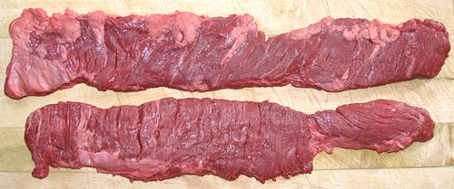

Beef Skirt Steak

This lesser known cut is favored for fajitas, stir fry, Bolognese
sauce, and Iberian and South American cuisines, as well as in
fancy restaurants. It is flavorful with a loose texture that takes
marinades very well.
The Outside Skirt, also known as the Diaphragm Skirt, is sold almost
entirely to restaurants. The Inside Skirt, considered slightly less
flavorful, can be found in some markets. The top photo specimen, an
Outside skirt, was 17 inches long, 2-3/4 inches wide and 0.35 inch
thick, weighing 8-3/4 ounces. They can range from 16 to 24 inches
long.
More on Cuts of Beef.
Buying:
This cut is usually purchased from specialty
meat stores rather than in supermarkets. The outside skirt can be
found at markets that also sell direct to restaurants.
Caution: Supermarkets often sell Flap Meat labeled as
Skirt Steak. While these two may be interchangeable in Tex-Mex
usage, the much thinner flap meat is not suitable for other uses.
Prep:
Membranes are almost always present on the
outside skirt and may be present on the inside skirt. They must be
removed, but usually you can just pull them off with little trouble.
Cooking:
This meat is generally either cooked very
fast over high heat, or braised for a fairly long time. In between
it will be tough. After cooking it is generally sliced thin across
the grain. Caution: because this cut is so
loose in texture, heat penetrates very quickly so it's easy to overcook.
ab_skirtz 071105 - www.clovegarden.com
©Andrew Grygus - agryg@clovegarden.com - Photos
on this page not otherwise credited © cg1
- Linking to and non-commercial use of this page permitted